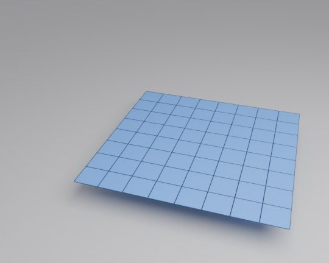
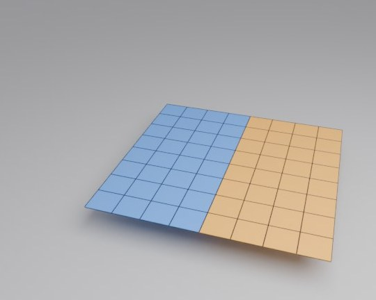

Bonus lesson
Side of Active
With an active vertex, Side of Active selects all vertices in a direction you choose. It works in Edit Mode. The menu is Select › Side of Active. The manual compares it to Loop Inner-Region, but this tool works by direction and not by a closed loop.


Axis Mode and Axis Sign
Axis Mode sets how the direction is worked out. The manual points to Transform Orientations for more on this. Axis Sign decides what gets selected:
Positive Axis and Negative Axis select everything from the active vertex outward in the positive or negative direction of the chosen axis. Aligned Axis selects only the vertices that sit in line with the active vertex.
Axis and Threshold
Axis chooses the direction, for example X. Threshold is the amount of influence the selection has outside its original limits. The manual says the higher the Threshold, the more vertices get selected.
The manual shows one example along the X axis, from left to right: the active vertex, Aligned, Positive and Negative.
Read the manual page on Side of Active.
Try it
This exercise is our own suggestion and has not been run step by step in the GUI. Add a Grid, enter Edit Mode and switch to Vertex select mode. Click a vertex near the middle to make it active. Choose Select › Side of Active, then try Positive Axis, Negative Axis and Aligned Axis with the X axis. Use Ctrl+Z to undo.